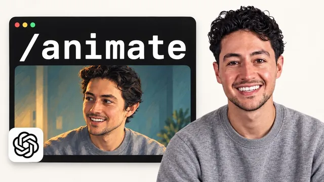

GPT-6 Astra가 유튜브를 바꿔놓은 것 같다

원본 영상 보기 →
- 스타일 트랜스퍼는 "곱셈" 구조로 이해하면 쉽다
- 프롬프트에서 "무엇을 고정할지"를 명시하는 게 품질을 가른다
- 모델 선택으로 비용을 3배 이상 줄일 수 있다
한 줄 요약
자신의 실제 영상을 애니메이션 스타일로 완전히 바꾸는 "비디오 스타일 트랜스퍼" 파이프라인을, 누구나 따라할 수 있는 간단한 방법부터 코딩 에이전트로 자동화하는 방법까지 전부 공개한다.
전체 내용 정리
왜 지금 이 기술이 중요한가
과거에는 이런 스타일 변환을 하려면 복잡한 모션 캡처 장비가 필요했지만, 지금은 그냥 노이즈 적은 배경에서 영상 하나만 녹화하면 된다. 발표자는 이것이 크리에이터들이 자신을 표현하는 새로운 방식이 될 것이라 보고, 이 접근법 전체를 스케일 가능한 형태로 오픈소스처럼 공개한다고 밝힌다. 소비자용 방법(API 호출 수준으로 간단한 방법)과, 더 저렴하고 최적화된 코딩 에이전트 파이프라인 두 가지를 모두 보여준다.
핵심 원리: "원본 영상 × 스타일 이미지 = 스타일 입혀진 영상"
전체 흐름은 이렇다. 원본 녹화 영상이 모션(움직임)을 제공하고, 그 원본 영상에서 뽑은 한 프레임을 이미지 생성 모델(GPT 이미지 계열 모델)로 원하는 스타일로 변환한 "스타일 레퍼런스 이미지"를 만든다. 이 두 가지—원본 모션과 스타일 이미지—를 영상 생성 모델(영상에서는 "Genjutsu"라는 모델 사용)에 함께 넣으면 스타일이 입혀진 클립이 나온다. 이미지 영역에서는 이런 스타일 트랜스퍼가 이미 오래전부터 가능했지만, 영상에서 의미 있는 수준으로 되는 건 지금이 처음이라고 설명한다.
실전 데모: 얼굴 사진 하나로 다양한 스타일 만들기
발표자는 자기 얼굴 사진 한 장으로 3D 페인팅 스타일, 손그림 애니메이션, 스톱모션 조각 느낌, 잉크 그래픽노블, 유화 애니메이션, 수채화/그래파이트, 프리미엄 극장판 CG, 목탄/분필 등 다양한 스타일을 생성해서 보여준다. Higsfield라는 서비스에 가입해 GPT 이미지 모델(Sunburst)을 선택하고, 얼굴 프레임을 업로드한 뒤 "쿨한 3D 아방가르드 스타일로 바꾸되 얼굴 특징은 알아볼 수 있게 유지해줘" 같은 프롬프트를 넣는 방식이다. 원하는 스타일이 나오면 다운로드해서 다음 단계로 넘어간다.
영상에 스타일 입히기: 프롬프트로 원본 특징을 명시적으로 고정한다
영상과 스타일 이미지를 Higsfield의 Genjutsu 모델에 함께 넣고, "레퍼런스 영상의 퍼포먼스를 스타일 레퍼런스 이미지 속 같은 인물에게 그대로 전달하라. 얼굴형·곱슬머리·수염·회색 맨투맨·검은 마이크 같은 식별 가능한 특징은 보존하라"는 식으로 구체적으로 지시한다. 스타일 이미지는 렌더링 스타일과 캐릭터 디자인만 정의하고, 머리 움직임·시선·눈 깜빡임·입모양·어깨 움직임 같은 동작은 원본 영상이 우선한다는 점을 프롬프트에 명시하는 게 핵심이다.
비용과 모델 선택 — Genjutsu 대 Wan 3.0
5초 분량 생성에 Higsfield Genjutsu는 약 32.5크레딧이 든다. 같은 작업을 Wan 3.0(Genjutsu와 비슷한 계열의 모델)으로 하면 720p·16:9 기준 9크레딧으로 줄어든다. 품질은 완전히 동일하지는 않지만 꽤 준수한 수준이라고 설명한다. 가끔 변환이 실패하는 경우도 있는데, 이는 대개 저작권이 있는 캐릭터를 쓴 게 아니라면 수학적 오류 때문이며 실패 시 크레딧이 환불되고 재시도하면 된다.
자동화: 코딩 에이전트로 전체 파이프라인 오케스트레이션
5분 같은 긴 영상은 모델 한계 때문에 한 번에 통째로 처리할 수 없어 20초 단위 등으로 잘라서 각각 스타일 변환한 뒤 이어붙여야 한다. 이 전체 과정—계획, 실행, 검수, 실패 시 재시도, 각 이음새(join)의 불일치 확인—을 코딩 에이전트(영상에서는 GPT6 Astra라는 에이전트 사용)에게 맡길 수 있다. 코딩 에이전트에 Higsfield를 플러그인으로 연결하고 준비된 프롬프트를 붙여넣으면, 영상 파일을 받아 스타일 이미지를 만들고, 해상도·구간·컷 길이 등을 사용자에게 확인한 뒤, 예상 크레딧 비용을 미리 알려주고 승인을 받고 나서 전체 구간을 생성한다. 이후 Solero(음성 활동 감지)와 ffmpeg로 후처리해 이어붙인다. 저렴하게 직접 서빙하고 싶다면 Wan 2.2 Animate 14B 같은 모델을 허깅페이스에서 내려받아 자체 하드웨어에서 돌릴 수도 있다.
활용 사례: 광고 A/B 테스트
발표자는 이 기술이 광고에 특히 강력하다고 강조한다. 하나의 영상 광고를 20~30가지 스타일로 변환해 지역·문화·취향에 따라 스플릿 테스트를 하고, 전환율이 가장 높은 스타일에 예산을 몰아줄 수 있다는 것이다. 130크레딧 정도로 여러 스타일을 실험해서 전환율이 1.5~2배 높은 광고 하나를 찾아내면, 처음 몇 번의 클릭만으로도 비용을 회수할 수 있다고 설명한다.
핵심 인사이트
- 스타일 트랜스퍼는 "곱셈" 구조로 이해하면 쉽다: 원본 영상(모션)과 스타일 이미지를 각각 준비해서 결합하는 구조이기 때문에, 스타일 이미지만 여러 개 만들어두면 같은 원본 영상으로 다양한 결과물을 빠르게 뽑아낼 수 있다.
- 프롬프트에서 "무엇을 고정할지"를 명시하는 게 품질을 가른다: 스타일 이미지는 렌더링 스타일만, 원본 영상은 동작·표정을 담당한다고 역할을 명확히 나눠 지시해야 원본의 정체성이 무너지지 않는다.
- 모델 선택으로 비용을 3배 이상 줄일 수 있다: 같은 결과물이라도 어떤 영상 생성 모델을 쓰느냐에 따라 크레딧 비용이 32.5에서 9까지 차이 나므로, 대량 생산 전 모델별 비용을 비교해볼 가치가 있다.
오늘 당장 해볼 것
- Higsfield에 가입해 자신의 얼굴 사진 한 장을 업로드하고 원하는 스타일(3D, 애니메이션 등)로 변환한 이미지를 하나 생성해본다.
- 10~30초 분량의 짧은 셀프 영상을 녹화해, 위에서 만든 스타일 이미지와 함께 Genjutsu 모델에 넣어 스타일이 입혀진 클립을 만들어본다.
- 광고나 홍보 영상이 있다면, 같은 원본 영상에 서로 다른 스타일 2~3개를 입혀보고 어떤 스타일이 더 눈길을 끄는지 비교해본다.